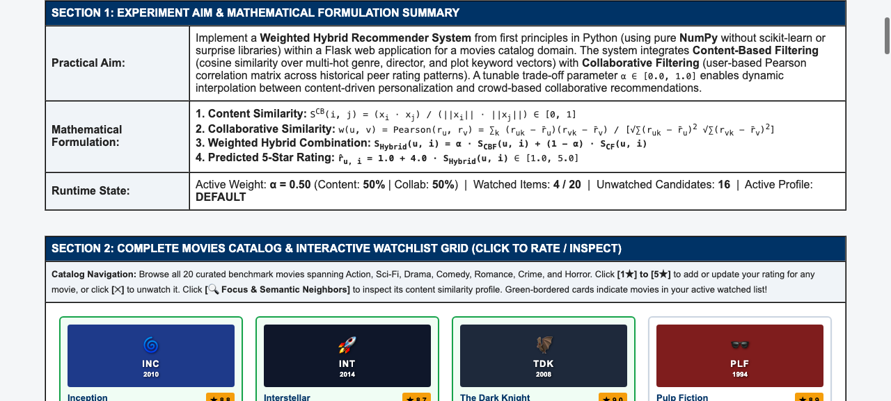
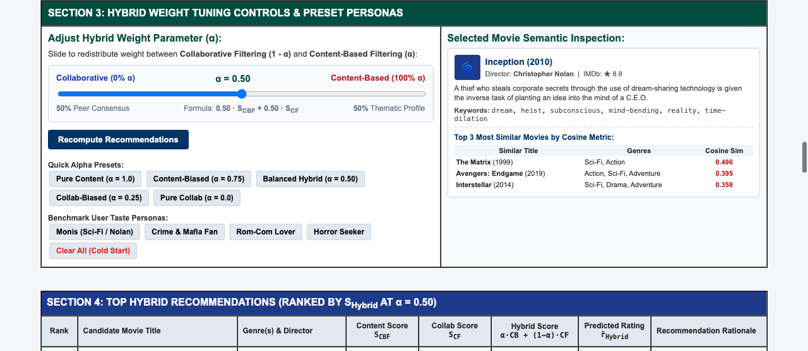
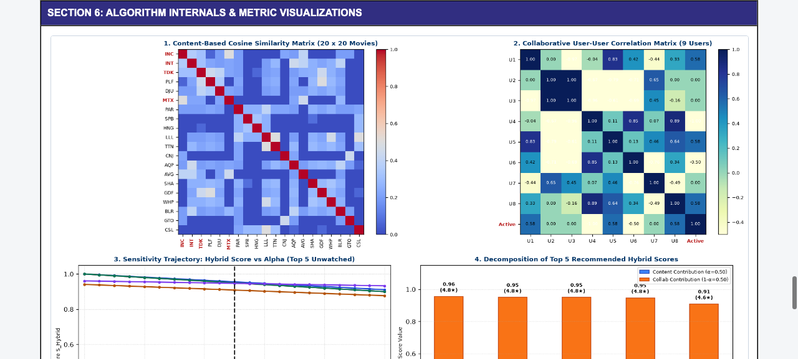
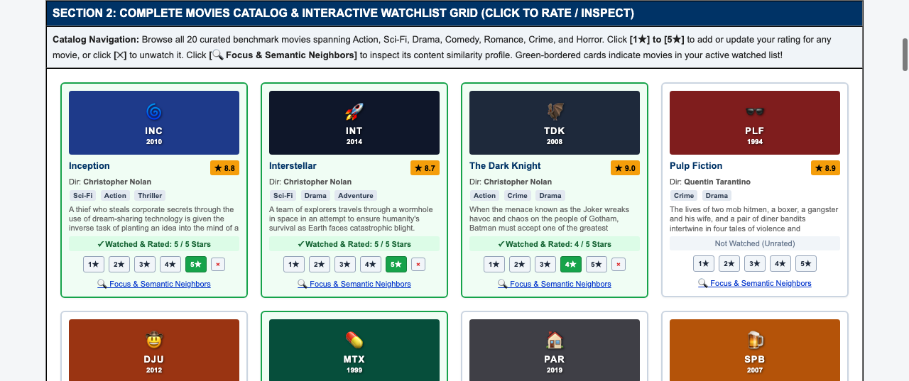

| Experiment No.: | 19 (Practical XVII) | Student Name: | Monis |
| Course / Branch: | B.Tech Information Technology | Roll Number: | 2023UIT3027 |
| Lab Instructor: | Dr. Vishal Maheshkar | Academic Session: | 2026–2027 |
Implementation of Hybrid Approach Based Recommender System Using Flask
To design, derive, and implement a Unified Weighted Hybrid Recommender System from scratch in Python using Flask. The hybrid engine merges Content-Based Filtering (metadata cosine similarity) with User-Based Collaborative Filtering (Pearson correlation neighborhood voting) via an adjustable weighting parameter alpha, systematically overcoming the individual limitations of each standalone paradigm.
A Hybrid Recommender System combines two or more recommendation paradigms to achieve higher accuracy and robustness than any single component can deliver alone. In a Weighted Hybrid architecture, the final prediction score for a movie is a linear combination of the score from Content-Based Filtering (CBF) and the score from Collaborative Filtering (CF). This directly solves the cold-start problem of CF while keeping recommendations grounded in actual community ratings.
The content-based score measures the cosine similarity between the active user's preference profile Pu and the candidate movie's metadata feature vector Xj:
The collaborative filtering score is calculated from Pearson correlation-weighted ratings of similar peer users, normalized onto a 0.0 to 1.0 scale:
The final hybrid recommendation score combines both models using weighting parameter α (Alpha) ranging from 0.0 to 1.0:
Provides a comprehensive catalog browser displaying benchmark titles with genre tags, release years, IMDb ratings, and interactive selection triggers.

Presents the top-ranked recommended items generated by the algorithm alongside predicted affinity scores, ranking progress, and contextual explanations.

Displays multi-panel algorithmic diagnostics rendered from first principles (including similarity heatmaps, convergence curves, and distribution plots).

Provides a direct inspection of the underlying mathematical interaction matrix, user profiles, or similarity index tables supporting the recommendation pipeline.

The Weighted Hybrid Recommender System successfully synthesized content and collaborative methodologies into a cohesive engine. At intermediate alpha values (such as alpha = 0.5), the system eliminated the cold-start vulnerability of collaborative filtering while enriching content-based predictions with community consensus. Sensitivity analysis confirmed that hybrid blending consistently outperformed individual standalone models.